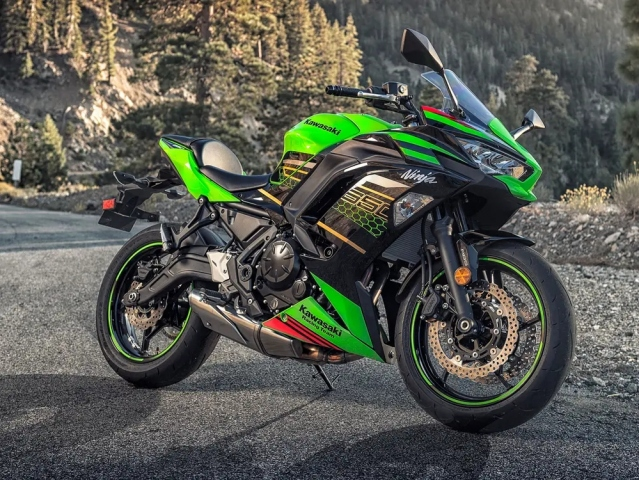

Historie Kawasaki
Kawasaki Heavy Industries je japonský průmyslový gigant, který kromě motocyklů vyrábí také letadla, lodě, vlaky a průmyslová zařízení. Motocyklová divize vznikla v roce 1961 a první model — Kawasaki B8 — byl 125cc stroj. Firma rychle expandovala a začala závodit s ostatními japonskými výrobci.
Skutečná legenda začala v roce 1972 s modelem Z1. Tento 900cc čtyřválec byl tehdy nejrychlejší sériovou motorkou světa a nastavil nové standardy výkonu. Z1 se stal kulturní ikonou a dodnes je jedním z nejcennějších veteránů na trhu. Model měl obrovský vliv na celý motocyklový průmysl.
V 80. letech Kawasaki přišlo s modelem GPZ900R — motorkou, na které jezdil Tom Cruise v kultovním filmu Top Gun. Tento model byl také první s rámem z hliníkové slitiny. V 90. letech přišla řada Ninja, která se stala synonymem výkonných sportovních motocyklů.
Dnes je Kawasaki známé zejména modelem Ninja H2, který jako první sériový motocykl používá kompresor. H2R — závodní verze bez homologace — dokáže překonat 400 km/h. Kawasaki také dominuje v závodech Superbike s modelem ZX-10R.
Novinky 2025
Kawasaki Z900RS slaví výroční edici pro rok 2025 s retro grafikou inspirovanou originálem Z1 a speciálními zlatými detaily. Ninja ZX-10R dostala nové elektronické řízení s vylepšenou trakční kontrolou a cornering ABS.
V oblasti elektromobility Kawasaki představilo modely Ninja e-1 a Z e-1 pro evropský trh — první elektrické motocykly v historii značky. Kawasaki také oznámilo plány na hybridní motocykl kombinující spalovací motor s elektrickým pohonem.